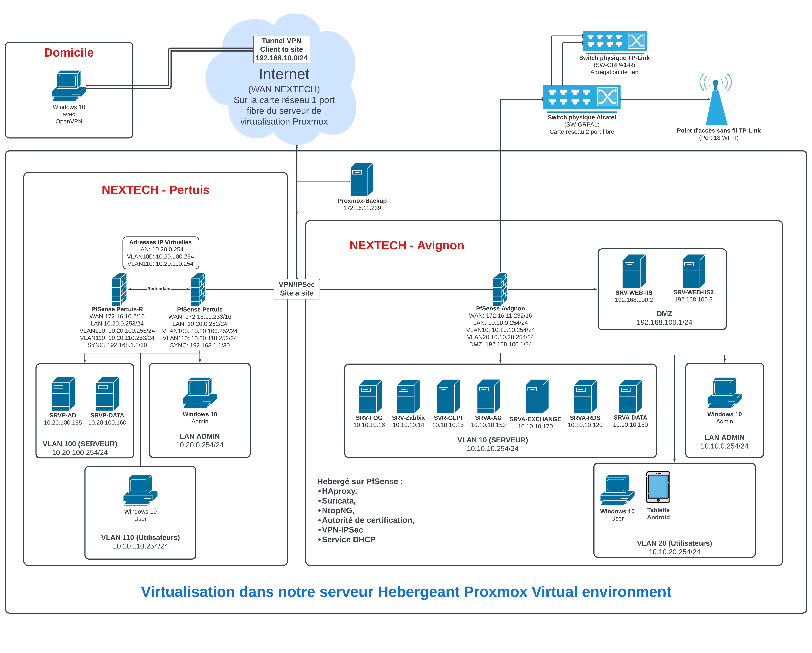

BTS SIO option SISR
Deux ans consacrés à l'administration des systèmes et réseaux, en alternance : les cours à Nextech, la pratique en entreprise chez Absys Informatique.
Projet : infrastructure multi-sites
Contexte
Concevoir l'infrastructure d'une entreprise répartie sur plusieurs sites, pensée pour la haute disponibilité : aucun service critique ne doit dépendre d'une seule machine.
Ce que j'ai mis en place
- Virtualisation de l'ensemble des serveurs sous Proxmox
- Pare-feux pfSense en haute disponibilité (CARP), sites reliés par VPN IPsec
- Active Directory redondant
- GLPI pour le parc, Zabbix pour la supervision
- Serveur web IIS en DMZ derrière HAProxy
- Sauvegardes Veeam et déploiement des postes
ProxmoxpfSenseIPsecCARPActive DirectoryGLPIZabbixHAProxyVeeam

Le dossier technique complet est disponible sur demande : contactez-moi.
Compétences mobilisées
Windows ServerLinux DebianProxmoxpfSenseActive DirectoryGLPIZabbixVeeam
← Retour au parcours